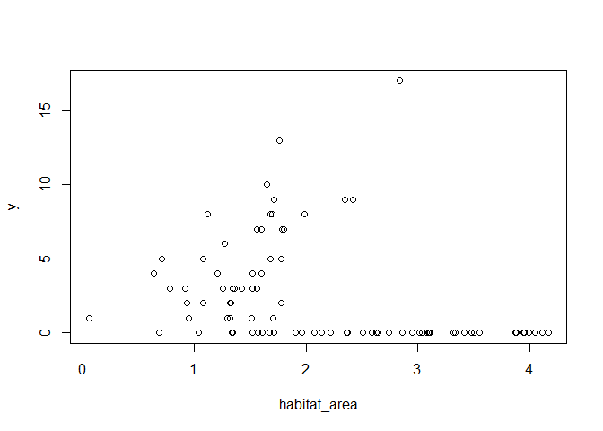
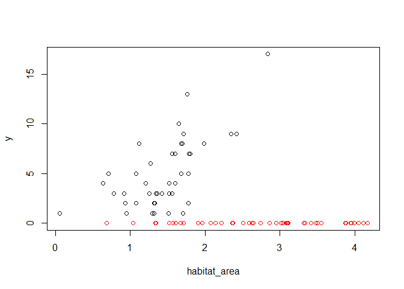
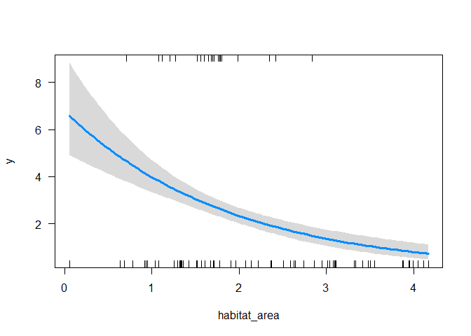
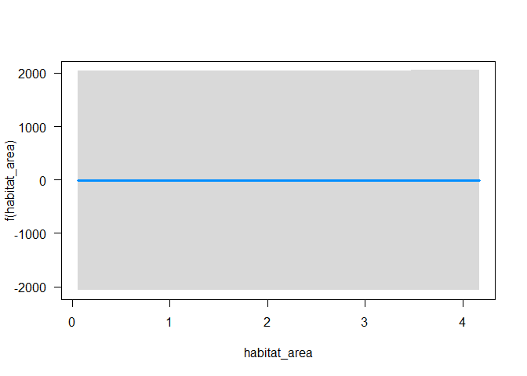
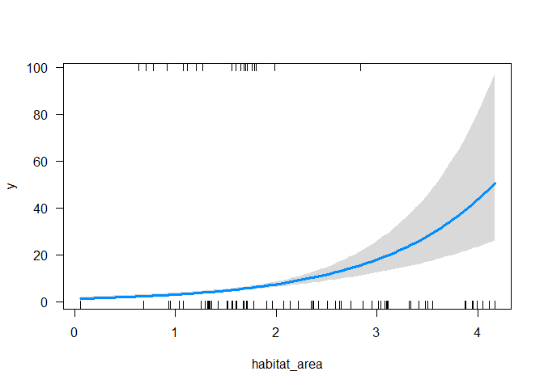

Correcting for confounded variables with GLMs
General (and generalized) linear models can be useful for analyzing field data, where sampling is often distributed unevenly across different environmental gradients or treatment groups. They help us correct for confounded gradients and discover effects that are hidden in plots of raw data.
For instance, we used GLMs in a meta-analysis of the rates species are shifting their ranges under climate change. We used the GLMs to correct for differences in ways different studies had measured species ranges, so we could then study the unique effects of ecological variables.
You can also think of these GLMs with multiple covariates as ‘statistically’ (rather than experimentally) controlling for the effects of each variable when looking at the effects of the other variables.
In this post I’ll demonstrate this application for statistical controls with a simple example of fish abundance observed in two regions.

Simulate data
We’ll start by simulating some data. Let’s say the data represent fish abundance at sites. Fish vary in the area of fish habitat available at that site. There are also two bioregions we’ve sampled. We’ll assume the fish only occur on one bioregion, even though habitat is available in both bioregions.
We’ll assume data are poisson distributed, to account for the fact that fish numbers can’t be <0, and that they should be integers.
To simulate the data we will specify an intercept and an habitat effect b_habitat. We’ll assume two bioregions, so we only need to specify one bioregion effect (which is the mean difference from bioregion B and A)
nsites <- 88
#Effects
intercept <- 0
b_habitat <- 1
b_region <- -20Then we need to make up the covariate data.
set.seed(50)
region <- c(rep(0, nsites/2), rep(1, nsites/2))
habitat_area <- rnorm(nsites, 1.5, 0.5)
habitat_area <- habitat_area*(region + 1)We made it so habitat area was on average twice as big in the second region.
Now assemble a ‘design matrix’ (X) and matrix of effects (ie our ). These help us then make predictions of mean abundance with a simple matrix multiplication:
coefs_true <- matrix(c(intercept, b_habitat, b_region))
X <- matrix(cbind(1, habitat_area, region), ncol = 3)Now make the ‘true’ means for our simulation and the fish abundance data:
y_mean <- exp(X %*% coefs_true)
y <- rpois(nsites, y_mean)We took an exponent to ensure positive values.
If this confuses you so far, you can read more about linear models and then generalized linear models on my other blogs.
Plot simulations
plot(habitat_area, y)
So not strong evidence of any effect of habitat area on abundance. What about if we colour points by bioregion?
plot(habitat_area, y, col = region + 1)
So it appears the red region (the region with 1 in the region variable) has not habitat relationship, whereas the black region (region with 0 in region variable) has a positive relationship. This occurs because we set the region intercept to -20 (and a poisson with mean exp(-20) will predict basically always zero).
Naive GLM
Now let’s fit a GLM assuming we don’t know about bioregion
m1 <- glm(y ~ habitat_area, family = "poisson")
summary(m1)
##
## Call:
## glm(formula = y ~ habitat_area, family = "poisson")
##
## Deviance Residuals:
## Min 1Q Median 3Q Max
## -3.071 -1.783 -1.281 0.229 7.194
##
## Coefficients:
## Estimate Std. Error z value Pr(>|z|)
## (Intercept) 1.91396 0.15321 12.493 < 2e-16 ***
## habitat_area -0.53476 0.08272 -6.464 1.02e-10 ***
## ---
## Signif. codes: 0 '***' 0.001 '**' 0.01 '*' 0.05 '.' 0.1 ' ' 1
##
## (Dispersion parameter for poisson family taken to be 1)
##
## Null deviance: 401.78 on 87 degrees of freedom
## Residual deviance: 354.11 on 86 degrees of freedom
## AIC: 501.23
##
## Number of Fisher Scoring iterations: 7Habitat is significant (p < 0.001), but the estimate is in the wrong direction! It is saying there are fewer fish with more habitat. This is because the second region has on average twice as much habitat, but our fish doesn’t ever occur there.
To see this, we can do a plot with the visreg package:
library(visreg)
visreg(m1, scale = "response")
So predicting an effect of habitat area that decreases with habitat area.
Region adjusted GLM
Ok, so now try including region:
m2 <- glm(y ~ habitat_area + region, family = "poisson")
summary(m2)
##
## Call:
## glm(formula = y ~ habitat_area + region, family = "poisson")
##
## Deviance Residuals:
## Min 1Q Median 3Q Max
## -2.43472 -0.26179 -0.00006 -0.00002 2.46518
##
## Coefficients:
## Estimate Std. Error z value Pr(>|z|)
## (Intercept) 0.2340 0.2294 1.020 0.308
## habitat_area 0.8851 0.1319 6.713 1.91e-11 ***
## region -23.0326 2100.7940 -0.011 0.991
## ---
## Signif. codes: 0 '***' 0.001 '**' 0.01 '*' 0.05 '.' 0.1 ' ' 1
##
## (Dispersion parameter for poisson family taken to be 1)
##
## Null deviance: 401.777 on 87 degrees of freedom
## Residual deviance: 54.311 on 85 degrees of freedom
## AIC: 203.43
##
## Number of Fisher Scoring iterations: 18Habitat area is significant and positive now. Note also the effect size (0.885) is within the error bounds (SE = 0.132) for the true effect size (=1). Let’s also confirm our better model (most parsimonious) with the AIC (you can read more about what the AIC is on this blog).
AIC(m1, m2)
## df AIC
## m1 2 501.2268
## m2 3 203.4282So there’s basically no evidence for the model without bioregion compared to the model with that effect.
But notice that the region effect is approximately correct (-23), but the standard error is huge and, consequently, the region effect is non-signficant (p = 0.99). This happens because the abundance is always zero in region 2, so the poisson model can’t get a good estimate of the mean abundance. Put another way, the poisson must have mean >0, but it can’t distinguish between a mean of 0.000000001 versus say 0.0001 (they both predict basically all zeros), so the SE are very broad.
We see this if we do a plot, and habitat area appears insignificant:
visreg(m2, xvar = "habitat_area")
Now replot the predictions, asking for habitat area just in the first bioregion (labelled 0 in the data):
visreg(m2, xvar = "habitat_area",
cond = list(region = 0), scale = "response")
Now we see the trend.
So our GLM has corrected for the absence of fish in bioregion 2 and correctly identified the positive relationship between abundance and fish biomass. The GLM with the region effect also gets the magnitude of the trend approximately correct (within the margin of error from the true value).